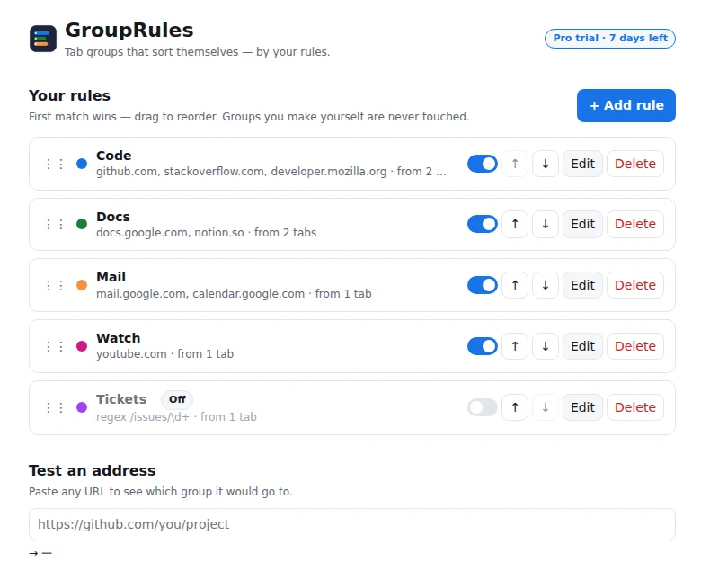
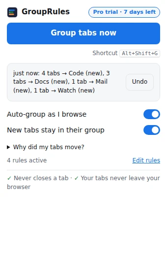

Tab groups that
sort themselves.
Write a rule once, like github.com → Code, and every matching tab joins the right Chrome tab
group as you browse. Private, predictable, and it never closes a tab.
Free forever with 3 rules · Pro is $5 once, not a subscription · Every install starts with a 7-day Pro trial. No signup, no card.
- Never closes a tab
- Never touches pinned tabs or groups you made
- One-click undo
- No account, no analytics
Before: a normal busy window
Rules: Code · Docs · AI · Watch
This is live. It runs GroupRules' real grouping engine right here in the page. The pinned Inbox and the “Trip” group you made yourself are left alone, on purpose.
Not a mockup
Real Chrome. Real tab groups.
GroupRules uses Chrome's own tab groups, so they work with everything Chrome already does: collapsing, saving, syncing, dragging. These are screenshots from Chrome, not a drawing.
Try it
Try it with your own sites.
Switch on a pack, write a rule, open a tab. This runs the extension's real engine, so what happens here is exactly what happens in Chrome.
Starter packs
Your rules (first match wins)
Write your own
Open a tab
Try closing tabs (×), pressing Undo, or switching auto mode off. In the extension, Free runs your first 3 rules and “Group tabs now”; auto mode and unlimited rules are Pro (included in the 7-day trial).
Why rules
Rules, not guesses.
AI tab organizers guess from page titles. GroupRules does exactly what you told it, every time.
Same site, same group. Every time.
A rule does what it says. No groups that change names between runs, no tabs filed under the wrong topic.
Nothing leaves your browser
Matching happens on your computer. No account, no analytics, and no cloud model reading your tabs.
Instant
200 tabs checked against 40 rules in under 50 ms. That's a test that runs on every build. No waiting on a model.
What about Chrome's own “Organize similar tabs”? It suggests groups when you ask it to, which is great for a one-off tidy. GroupRules is for every day: your sites always land in the same groups, automatically, as you browse, and you never have to sign in to anything.
Fixed on purpose
Built from other auto-groupers' 1-star reviews.
Before writing any code, we read the low-star reviews of existing tab-grouping extensions (paraphrased below). Each complaint became a behaviour GroupRules is tested against on every build.
“It makes a second group for the same site.”
One rule, one group per window
New tabs join the existing group, even a collapsed one. Never a second “Code”.
“It grabbed my pinned tabs.”
Pinned tabs are never touched
They're not moved, not grouped and not counted.
“It renamed and reordered my groups.”
Your groups are yours
A tab in a group you made is never moved out of it. Groups are only renamed when you rename the rule that owns them.
“The minimum-tabs setting doesn't work.”
Thresholds that actually work
No group for a lone tab (a new group starts at 2 by default, set per rule). Pull a tab out of a group and it stays out until you go to another site.
“A rule grabs subdomains it shouldn't.”
Exact, or with subdomains
Your choice, per rule. And a tester shows which group any address would go to before it happens.
“It mixed tabs from my other window.”
Each window stays separate
Tabs never jump between windows. Installed web apps and pop-ups are left alone.
“Seconds of lag on every new tab.”
Fast by design
200 tabs × 40 rules in under 50 ms, tested on every build. Bursts of new tabs are batched.
“Broke after an update and opened a tab about it.”
Boring, stable technology
Only Chrome's standard tab-groups API, with no scripts injected into websites. Updates never open a tab.
“It lost all my tabs.” (tab managers)
Undo anything
It can't close tabs at all, and one click undoes the last 20 moves, every tab back in its exact spot.
Inside the extension
Set up in under a minute.
Pick a starter pack
Code, Docs, Mail, AI, Watch, Social, Shopping, Design. Or one click turns the sites you already have open into rules.
Press Alt+Shift+G
Your whole window sorts itself. Don't like it? Undo puts everything back.
Forget about it
With auto mode on, new tabs join their group as you browse. Ctrl/Cmd+T inside a group keeps you in it.


Permissions, plainly
What Chrome will ask, and what it means.
- Read your browsing history
- That's Chrome's wording for “can see each tab's address”, which a rule needs to match it.
- Addresses are matched on your computer. They're never stored, logged or sent anywhere.
- GroupRules can't read what's on a page: not your email, your passwords or your forms. The permission also covers tab titles, which GroupRules doesn't use.
- Its only network request checks a Pro license key with Polar, and only after you choose to activate one. Chrome asks you first.
- No account, no analytics, no ads. Read the privacy policy.
Pricing
Free forever. Or $5 once.
No subscription, no account, no ads. Other tab tools charge $4.50–$6.99 a month.
Free
- Group now: button and Alt+Shift+G
- 3 rules, each covering many sites
- Undo the last 20 moves
- Starter packs and suggestions
- Auto-group as you browse
- New tabs stay in their group
- Regex rules and rule import
Pro
- Everything in Free
- Auto-group as you browse
- New tabs stay in their group
- Unlimited rules
- Regex rules and rule import
- All 1.x updates, on all your own computers
The trial starts on install: no signup, no card. When it ends nothing is deleted; extra rules just pause until you upgrade. One-time purchase with a 30-day refund, no questions. If GroupRules is ever discontinued, Pro keeps working. Checkout is by Polar, our reseller and merchant of record, which handles tax and receipts.
FAQ
Questions
What exactly is a rule?
A group name, a colour, and the sites that belong in it, like “github.com, gitlab.com → Code (blue)”. Match by
website (with or without subdomains), by how an address starts (github.com/acme/), or, in Pro,
by a regular expression. The first matching rule wins; drag rules to reorder them.
Why does Chrome say it can “read your browsing history”?
To put a tab in the right group, GroupRules has to see the tab's address, and Chrome words that permission as “read your browsing history”. Addresses are matched on your computer and never stored or sent anywhere. GroupRules has no analytics and no servers.
Does it close, suspend or reload tabs?
No. It only groups and moves tabs. The build fails automatically if the code could close, discard or reload one.
Will it mess with the groups I already have?
No. It only manages groups whose name matches one of your rules. Tabs in any other group stay put. It never recolours or reorders groups, and only renames a group when you rename the rule that owns it.
How is this different from Chrome's own “Organize similar tabs”?
Chrome's Tab organizer suggests groups when you ask it to. It's a one-off tidy that needs you signed in to Chrome, and it isn't available in every country or on every account. GroupRules follows rules you choose, keeps sorting new tabs as you browse, gives the same result every time, and needs no sign-in. The two work fine together.
What happens when the 7-day trial ends?
Auto mode and “new tabs stay in their group” switch off, and rules after your first three pause. Nothing is deleted: upgrade any time and they're back. Group now and Undo keep working forever.
Does it work with several windows?
Yes. Each window is sorted on its own, gets its own groups, and a tab never jumps to another window.
Can I change the keyboard shortcuts?
Yes. Alt+Shift+G groups the window and Alt+Shift+Z undoes. Change either one at
chrome://extensions/shortcuts.
Do my rules sync between computers?
Yes, through your own Chrome sync if you have it on. A Pro key works on all of your own computers.
Will a Chrome update break it?
Nobody can promise Chrome never changes, but GroupRules is built to be about as sturdy as an extension can be. It's made for Chrome's current extension platform (Manifest V3), uses only Chrome's standard tabs, tab-groups and storage features, and never injects code into websites, which is the part that usually breaks. If a Chrome update ever does break something, Undo still works and I'll ship a fix.
Does it work in Edge or Brave?
It's built and tested for Google Chrome. It only uses the standard tab-groups API that Edge and Brave also support, so it should work there too. If anything misbehaves, email me and I'll fix it.
How do refunds work?
Email ethanesame+grouprules@gmail.com within 30 days of buying and you get your money back. No questions, no forms.
Stop dragging tabs.
Set it up once. Your tabs sort themselves from then on.
GroupRules is made by one independent developer, Ethan Sam, in New York. Found a bug or want a feature? Write to ethanesame+grouprules@gmail.com. I read every message.